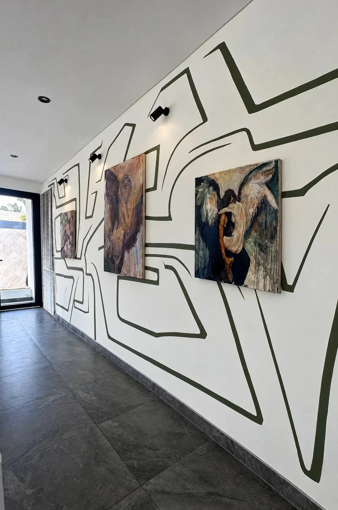
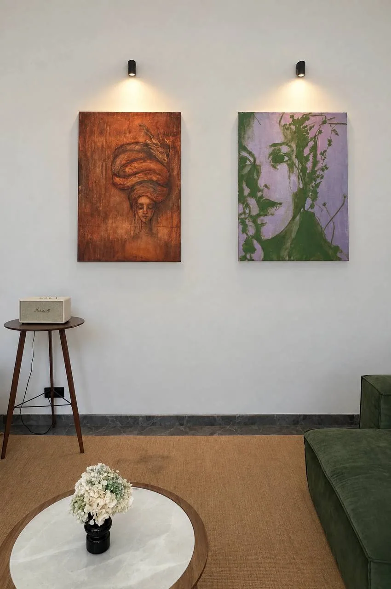
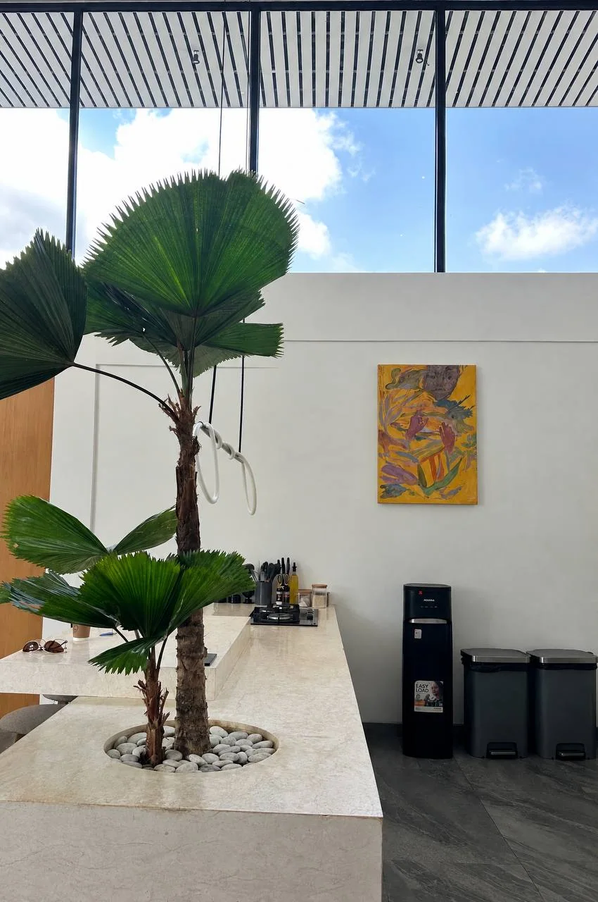
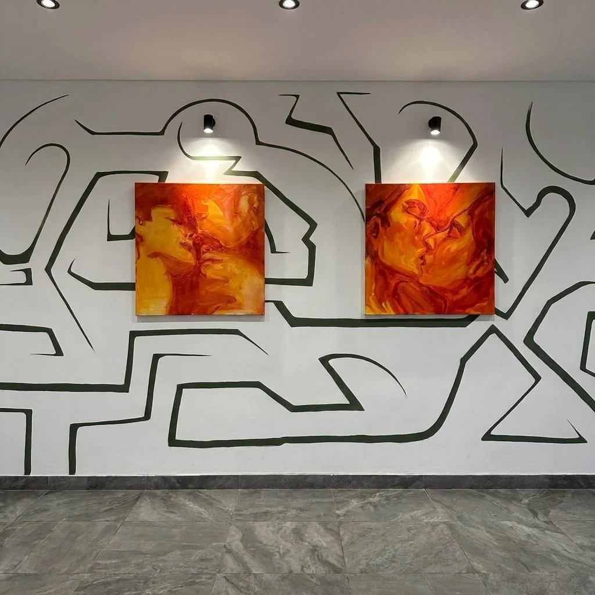
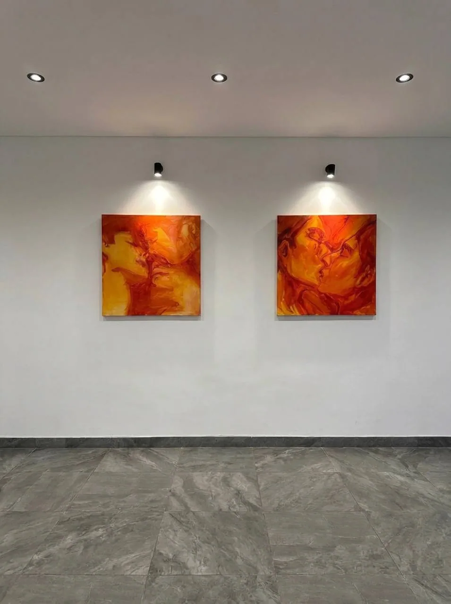
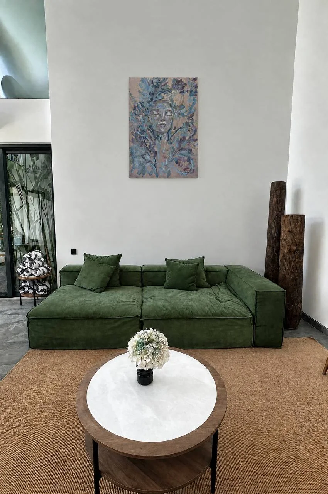

A private villa where art and architecture become part of the everyday experience.
This villa was created for those who value not only comfort and aesthetics, but experiences that stay with them.
Original paintings by Luna Selezman have been placed throughout the residence with intention. They are not simply there to decorate its walls. They offer moments of contemplation, invite new perspectives and bring an entirely different rhythm to the way we inhabit a space.
We believe art belongs not only in galleries and museums. It can live alongside us — in dialogue with architecture, light, memory and the passing hours of the day.
Take your time. Look again. Discover a detail you missed. Let the works become part of your own experience.
“A painting can change a room.
Living with it can change the way we see.”
Trained in the academic tradition of the Repin Institute in Saint Petersburg, Luna Selezman works between classical figuration and esoteric symbolism.
Human figures surface through layers of colour; wings, veils, faces and botanical forms recur across her work. Drawing from Hindu and tantric philosophy, dreams and personal mythology, her paintings explore the shifting boundaries of the self.
Luna’s practice moves between Saint Petersburg, Bali and Istanbul. Each place becomes a new setting for her ongoing inquiry into perception, identity and transformation.
“Painting, for me, is a form of tantric practice — a controlled dissolution of the self into color.”





Explore the artist’s wider practice, discover the stories behind the paintings, or get in touch to enquire about an original work.